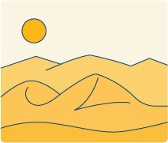

The world’s largest desert is the great
desert of North Africa: The Sahara. “Sahara”
in Arabic means wilderness. This wilderness
stretches across Africa from the Atlantic
Ocean to the Red Sea. From east to west
it covers more than 3,000 miles. East of
the Red Sea, desert conditions continue
through Saudi Arabia into Iraq and Iran.
To calculate the Sahara’s width is
not so easy. The desert does not simply
“stop,” and vegetation begins. Indeed,
desert conditions disappear so gradually
that nowhere in the south does it have
a precise boundary. Nevertheless, the
Sahara Desert is seldom less than 1,000
miles wide, and consequently must have
an area exceeding three million square
miles.
These enormous dimensions make the Sahara almost as big as the United States,
including Alaska. The Sahara is one of the hottest regions of the world. On average, it
receives only seventeen days of rain a year. When it does rain, delicate herbs and flowers
grow rapidly and then disappear almost as quickly as they appear. Many people think
of a desert as a flat stretch of sand. But in the Sahara Desert there are many mountains,
some rising up to 10,000 feet. For part of the year, some of these strangely shaped peaks
would even be covered with snow.